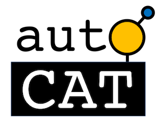
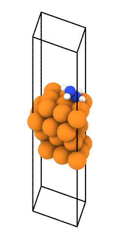

AutoCat Documentation

AutoCat is a suite of python tools for sequential learning for materials applications and automating structure generation for DFT catalysis studies.
Development of this package stems from ACED, as part of the ARPA-E DIFFERENTIATE program.
Below we provide an overview of the key functionalities of AutoCat. For additional details please see the User Guide, Tutorials, and API sections.
Sequential Learning
One of the core philosophies of AutoCat is to provide modular and extensible tooling to facilitate closed-loop computational materials discovery workflows. Within this submodule are classes for defining a design space, featurization, regression, selecting candidate systems, and defining a closed-loop sequential learning iterator. The key classes intended for each of these purposes are:
-
DesignSpace: define a design space to explore -
Featurizer: featurize the systems for regression -
Predictor: a regressor for predicting materials properties -
CandidateSelector: propose candidate system(s) for evaluation -
SequentialLearner: define a closed-loop iterator
Structure Generation

This submodule contains functions for automating atomic structure generation within the context of a catalysis study using density functional theory. Specifically, this includes generating bulk structures, surfaces, and placing adsorbates. In addition, functions for generating the single-atom alloys material class are also included. These functions are organized within AutoCat as follows:
-
autocat.bulk: generation of periodic mono-elemental bulk structures -
autocat.surface: mono-elemental surface slab generation -
autocat.adsorption: placement of adsorbates onto surfaces -
autocat.saa: generation of single-atom alloy surfaces
Structures generated or read with this package are typically of the form of
ase.Atoms
objects.
When opting to write structures to
disk using these functions, they are automatically organized into a clean, scalable directory organization.
All structures are written in the
ase.io.Trajectory
file format.
For further details on the directory structure, see the User Guide.
Installation
There are two options for installation, either via pip or from the repo directly.
pip (recommended)
If you are planning on strictly using AutoCat rather than contributing to development,
we recommend using pip within a virtual environment (e.g.
conda
). This can be done
as follows:
pip install autocat
Github (for developers)
Alternatively, if you would like to contribute to the development of this software,
AutoCat can be installed via a clone from Github. First, you'll need to clone the
github repo to your local machine (or wherever you'd like to use AutoCat) using
git clone. Once the repo has been cloned, you can install AutoCat as an editable
package by changing into the created directory (the one with setup.py) and installing
via:
pip install -e .
Contributing
Contributions through issues, feature requests, and pull requests are welcome. Guidelines are provided here.
Acknowledgements
The code presented herein was funded by the Advanced Research Projects Agency-Energy (ARPA-E), U.S. Department of Energy, under Award Number DE-AR0001211 and in part by the National Science Foundation, under Award Number CBET-1554273. The views and opinions of authors expressed herein do not necessarily state or reflect those of the United States Government or any agency thereof.